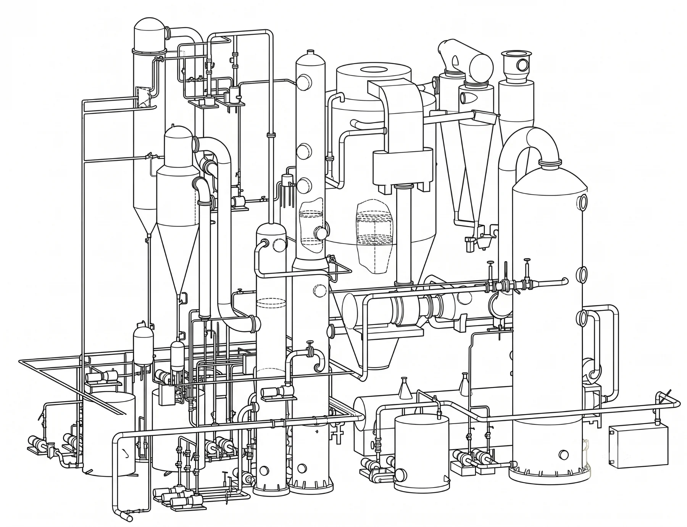
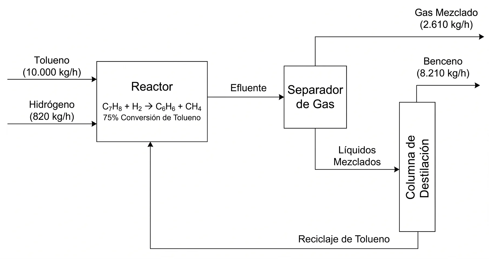
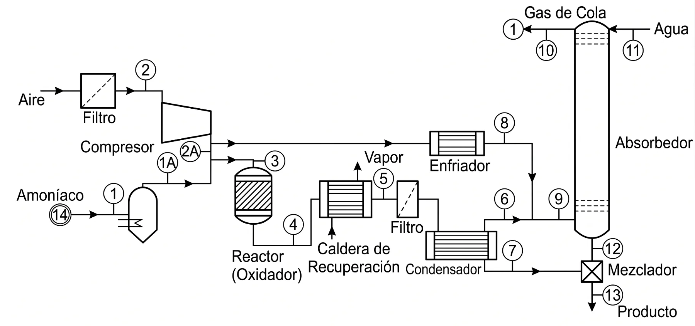
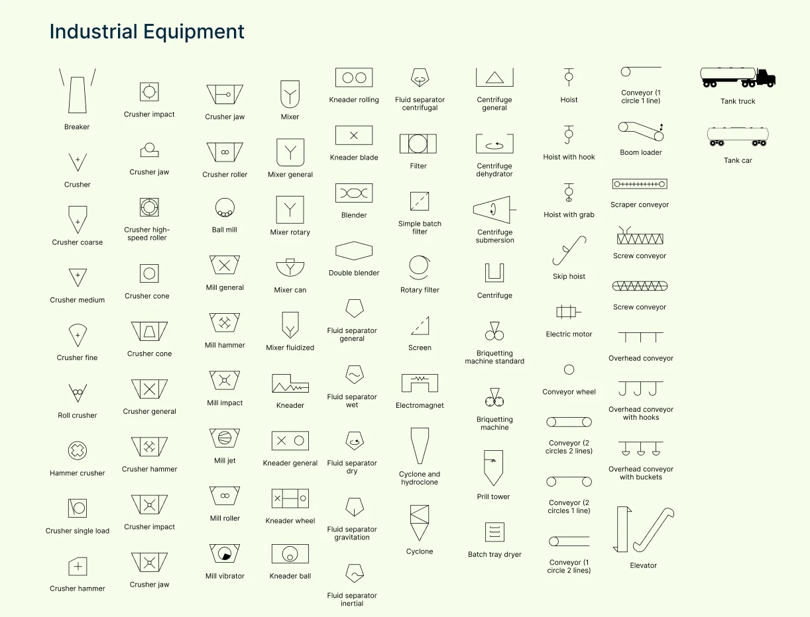
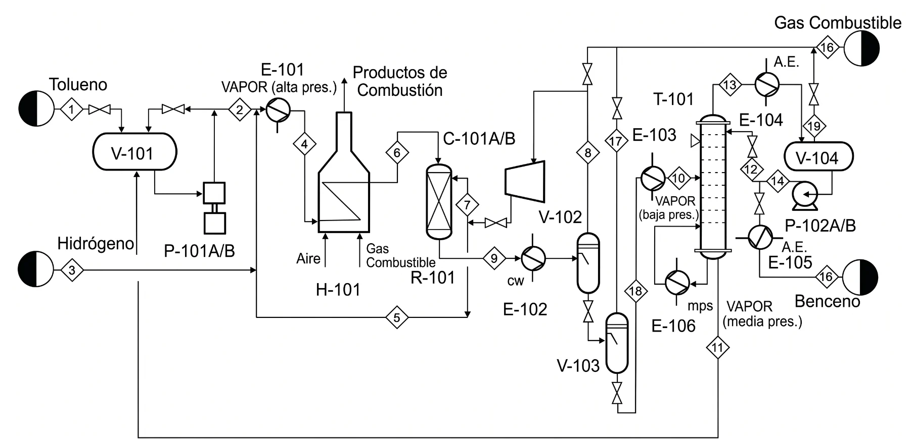
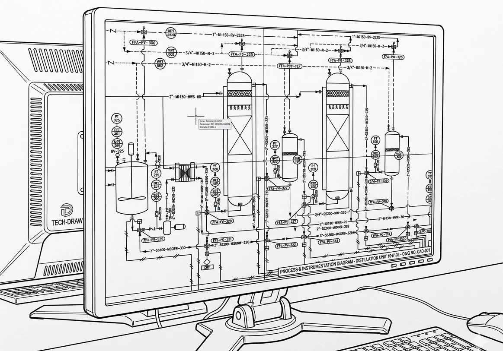
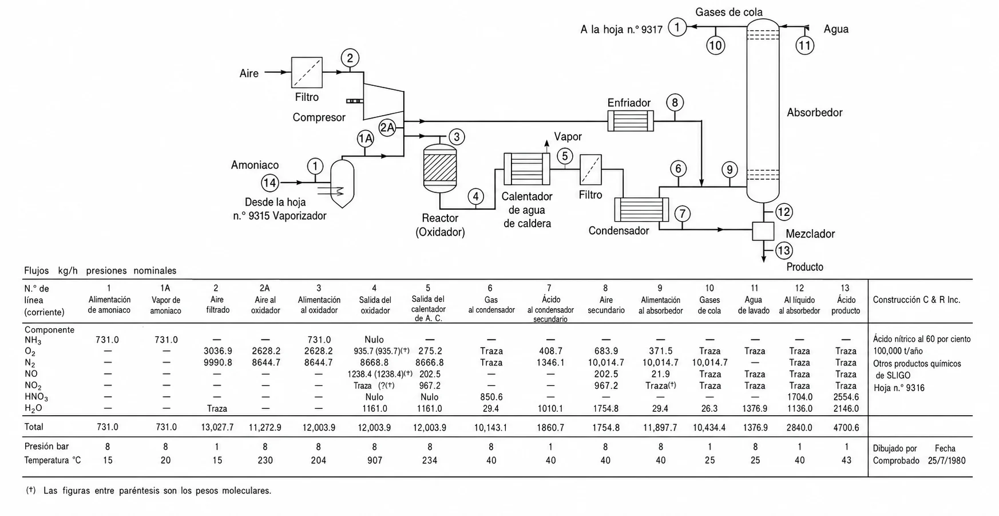

Del diagrama de bloques al P&ID: el lenguaje visual del proceso químico
Comenzaremos con un quiz de 10 minutos para verificar su preparación previa, seguido por una exploración detallada de cada tipo de diagrama y su aplicación práctica.
Los diagramas de ingeniería son el lenguaje visual universal de nuestra profesión. Permiten una comunicación clara entre ingenieros de distintas culturas, sin que el idioma sea una barrera.
Esta precisión es vital en la industria química, donde un error puede tener consecuencias catastróficas. La claridad no es un detalle estético: es una cuestión de seguridad.
Una planta real esconde cientos de equipos y corrientes. El diagrama es lo que la hace comprensible.
Vista simplificada de las operaciones principales y los flujos generales del proceso.
Incluye todos los equipos principales y los flujos con información técnica.
Detalle completo para construcción, incluyendo instrumentación y control.
La vista que cabe en una diapositiva ejecutiva y que obliga a identificar lo esencial del proceso.

PBD del proceso de hidrodesalquilación de tolueno. Reactor, separación y destilación con los flujos másicos principales y el reciclo.
Las transformaciones principales de la materia prima. Para pectina: cáscara de cítrico → extracto ácido → pectina precipitada → pectina seca.
Molienda y extracción forman "PREPARACIÓN"; fermentación y propagación forman "FERMENTACIÓN".
De izquierda a derecha siguiendo el flujo natural del proceso, minimizando cruces de líneas.
Solo si son críticos para entender el proceso, por ejemplo la planta de tratamiento de vinazas.
Cada bloque debe tener entrada y salida, y el diagrama debe contar una historia coherente y completa.
Eviten estos errores y su PBD comunicará profesionalismo desde el primer vistazo.
El documento de trabajo del ingeniero de proceso: suficientemente detallado para calcular, suficientemente simple para entenderse.
El PFD añade al PBD el detalle necesario para los cálculos de diseño. Donde el PBD dice "FERMENTACIÓN", el PFD muestra:
Es el documento de trabajo del ingeniero de proceso, suficientemente detallado para los cálculos pero lo bastante simple para mantener la claridad visual.

PFD de una planta de ácido nítrico. Cada equipo, corriente numerada y conexión queda explícita.

Biblioteca de símbolos de equipos. La simbología ISA es el alfabeto que cualquier ingeniero de procesos sabe leer.
Recuerden: están creando un documento que usarán por meses. Inviertan tiempo en hacerlo bien desde el inicio.

PFD profesional: equipos codificados (V-101, E-101, T-101), corrientes en diamante y servicios identificados.
V (vessel/tanque), P (pump/bomba), E (exchanger/intercambiador), C (column/columna), K (compressor/compresor), R (reactor/fermentador).
100 = preparación, 200 = fermentación, 300 = separación, 400 = destilación, 500 = servicios.
Los siguientes dígitos son secuenciales dentro del área. P-201 es la primera bomba en fermentación.
Sufijos para equipos idénticos: P-201A/B/C para tres bombas idénticas en paralelo.
Esta sistematización permite que cualquier ingeniero localice de inmediato un equipo en el proceso y en la planta física.
El PFD debe cerrar el balance de masa al menos a ±1 %, idealmente a ±0.1 %. No es pedantería académica: un balance que no cierra delata un error de concepto, de cálculo o de dibujo.
Usen la eficiencia real del proceso (90 a 92 %), no la teórica. Excel es su aliado: construyan una hoja que verifique automáticamente el cierre del balance.
Para hidrólisis ácida y evaporación del extracto. Líneas punteadas, rojas, presión típica de 3 barg.
Para condensadores y reactores. Líneas punteadas, azules, 2 barg; muestren suministro y retorno.
Para agitación y bombeo. Crítico para la estimación de costos operativos.
Necesario para instrumentación y control. Fundamental para la operación segura.
Estos servicios impactan significativamente el OPEX. Ignorarlos es diseñar en fantasyland.
Eviten PowerPoint: no está diseñado para diagramas técnicos. Inviertan 2 horas aprendiendo atajos; ahorrarán 20 durante el semestre. Guarden versiones incrementales (PFD_v1, v2, v3).

El control de versiones y el uso de plantillas estandarizadas son hábitos profesionales tan importantes como la herramienta.
Para su proyecto incluyan como mínimo: agua, etanol, azúcares, CO₂, sólidos suspendidos y biomasa. Usen Excel con fórmulas vinculadas para que los cambios se propaguen.

PFD acompañado de su tabla de corrientes: encabezados claros, unidades explícitas y decimales consistentes.
Su PFD es el single source of truth, el documento al que volverán constantemente. Esta evolución continua refleja la realidad industrial, donde los PFD se revisan decenas de veces durante un proyecto. En las próximas semanas añadirán:
Detalladas, conforme las calculen.
Las que resulten de sus balances.
Que anticipan el P&ID.
Las que surjan de la simulación en ASPEN.
Mantengan disciplina de actualización: un PFD desactualizado es peor que no tener PFD.
Formato inadecuado: un JPG pixelado e ilegible. Usen siempre PDF vectorial para mantener la calidad.
Actualizarán el PFD con potencias y tamaños.
Añadirán cabezas y NPSHr.
Incluirán áreas y configuraciones.
Especificarán número de platos y relación de reflujo.
Validarán cada número contra sus cálculos manuales.
El PFD es el hilo conductor que une todos estos elementos en un diseño coherente. Inviertan tiempo ahora en hacerlo bien; pagarán dividendos todo el semestre.